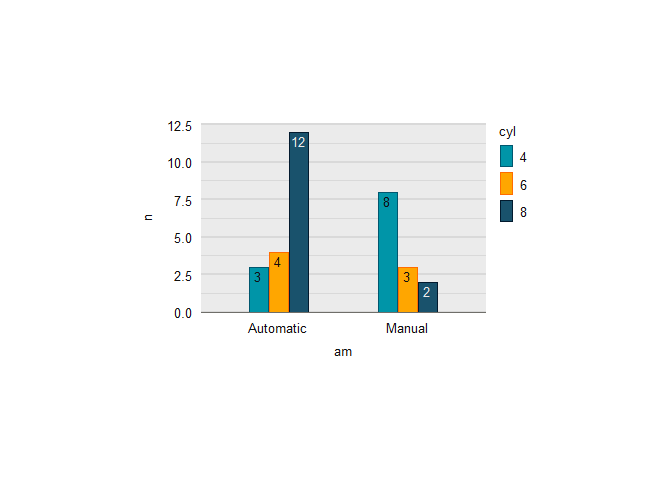

The objective of ggscribe is to provide annotation helper functions for publication-quality ‘ggplot2’ visualisation.
Note:
- To avoid namespace collisions, it is recommended to not load the package, but instead refer to each function with the package name (e.g.
ggscribe::sec_axis_text(). -
sec_axis_textadjusts space in the plot, whereasaxis_*functions do not. -
axis_ticks,axis_textandaxis_bracketrequire (1) a globally set theme with explicit panel dimensions and (2)coord_cartesian(clip = "off") -
panel_shademust be before geoms. - Where you require annotation text along a axis with different angles etc, use a combination of
sec_axis_textandaxis_*functions. Thesec_axis_textfunction should include the annotation that requires the maximum space that you want the plot to adjust to.
Installation
Install from CRAN, or the development version from GitHub.
install.packages("ggscribe")
pak::pak("davidhodge931/ggscribe")Example
ggscribe provides various axis and panel annotation helper functions.
library(ggplot2)
library(dplyr)
set_theme(
ggrefine::theme_grey(
panel_heights = rep(unit(50, "mm"), 100),
panel_widths = rep(unit(75, "mm"), 100),
)
)
mtcars |>
ggplot(aes(x = wt, y = mpg, colour = as.factor(gear), fill = as.factor(gear))) +
scale_colour_discrete(palette = blends::multiply(get_theme()$palette.colour.discrete)) +
#clip = "off" is required for axis_text, axis_ticks and axis_bracket
coord_cartesian(clip = "off") +
#reference lines and shade
ggscribe::reference_line(xintercept = 2.4) +
ggscribe::reference_line(yintercept = 12) +
ggscribe::panel_shade(
xmin = 4,
xmax = 5,
) +
#top axis
scale_x_continuous(
sec.axis = ggscribe::sec_axis_text(
breaks = c(mean(c(4, 5))),
labels = c("Range"),
guide = ggscribe::guide_sec_axis_text(
angle = 90,
)
)
) +
ggscribe::axis_bracket(
position = "top",
breaks = c(4, 5),
) +
ggscribe::axis_text(
position = "top",
breaks = c(2.4),
labels = c("Threshold"),
) +
#right axis
ggscribe::axis_text(
position = "right",
breaks = 12,
labels = "Threshold",
) +
#geom
geom_point() +
#annotations fit plot
theme(plot.background = element_rect(colour = "grey92"))
And a function to ensure text is easily coloured for contrast on a fill aesthetic.
ggwidth::set_equiwidth(equiwidth = 1.75)
mtcars |>
count(cyl, am) |>
mutate(
am = if_else(am == 0, "Automatic", "Manual"),
cyl = as.factor(cyl)
) |>
ggplot(aes(x = am, y = n, colour = cyl, fill = cyl, label = n)) +
geom_col(
position = position_dodge2(preserve = "single", padding = 0.05),
width = ggwidth::get_width(n = 2, n_dodge = 3),
) +
scale_fill_discrete(palette = jumble::jumble) +
scale_colour_discrete(palette = blends::multiply(jumble::jumble)) +
geom_text(
mapping = ggscribe::aes_contrast(), # or aes(!!!ggscribe::aes_contrast()),
position = position_dodge2(
width = ggwidth::get_width(n = 2, n_dodge = 3),
padding = 0.05,
preserve = "single"),
vjust = 1.33,
show.legend = FALSE,
) +
scale_y_continuous(expand = expansion(c(0, 0.05))) +
ggrefine::hybrid(x_type = "discrete")